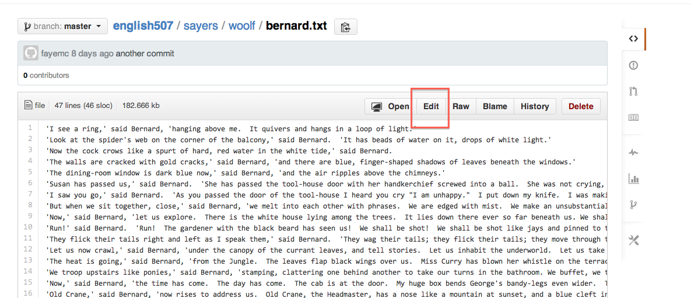
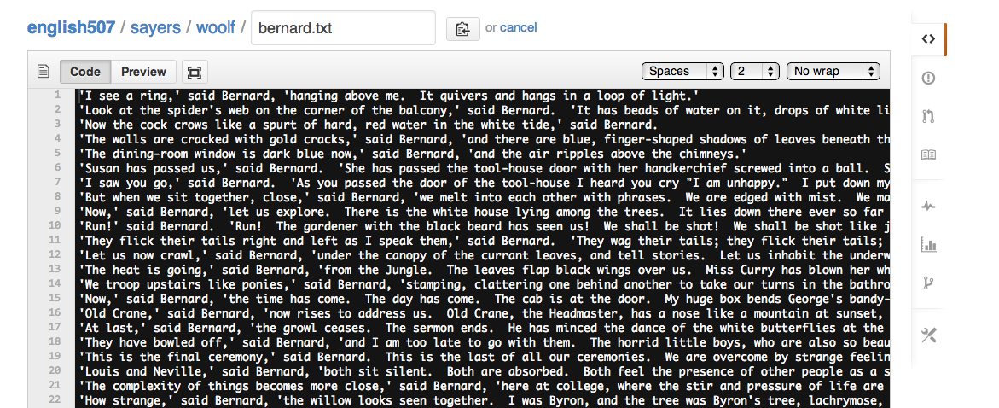

University of Victoria
Jentery Sayers
Spring 2014
Description
Format
Stipulations
Objectives
Assessment
Policies
#FutureEd
For the first iteration of this proposal you provided an abstract and other material related to your proposed essay for this seminar. During seminar on March 3rd, you then received some feedback on that proposal, and here I'm simply asking you to respond to that feedback by submitting a log entry that includes (at least):
Additionally, please take a moment to make sure --- in our English 507 repo --- your log is formatted and displaying as you'd like it. If it is not, then please either: 1) edit it locally, in your preferred text editor, and then push the correct version to GitHub, or 2) edit the file in your browser. Here, just select your file in the repo and then click the edit button:

And then the editing environment will look something like (minus the Woolf):

Of course, you can either write in the browser or copy and paste text from your local machine. Personally, I tend to do the latter, just in case there's a hiccup with my wifi connection or the like.
Of note, if (for whatever reason), there's material missing from your log in the remote repo, and you cannot retrieve it locally or via Git/GitHub, then let me know. We'll track it down. No worries. We indeed have a change history.
That's it for now. Please get in touch with questions or concerns, and thanks again for all of your work thus far.